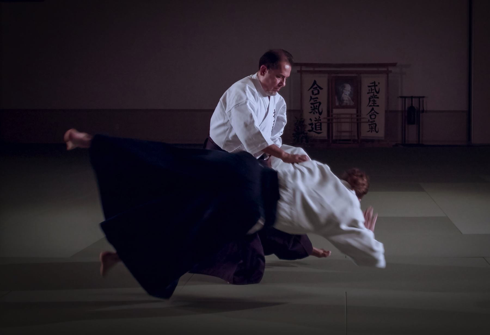
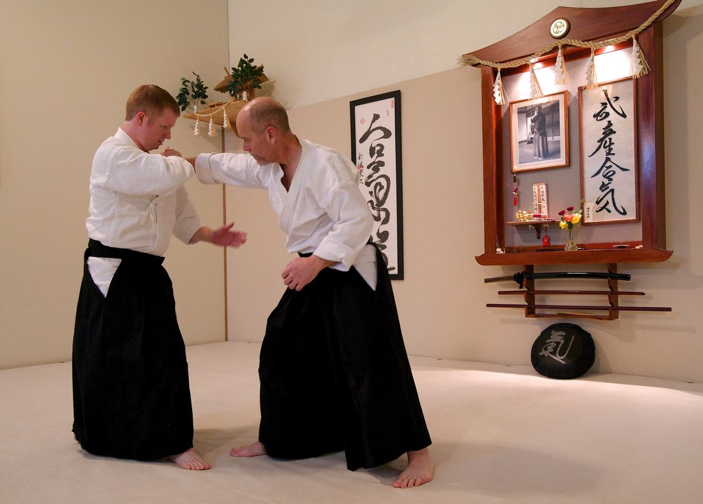
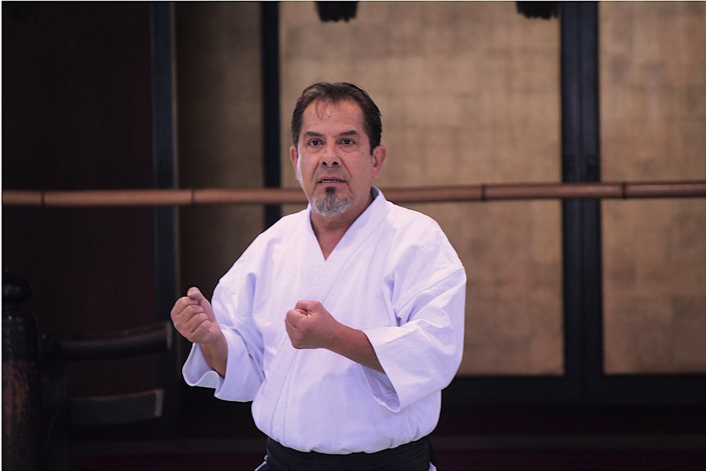
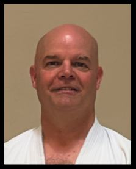
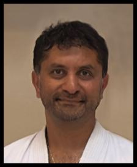
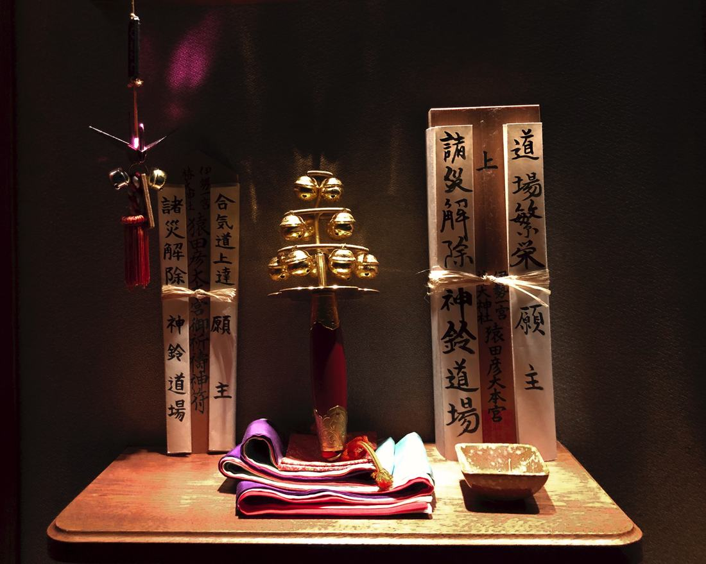

No competition
No tournaments and no sparring matches. You train with a partner, not against an opponent, and grow at your own pace.

Livermore · Adults & kids 9–15
A traditional Japanese martial art built on balance, timing and staying centered, not size or strength. Beginners of every age are welcome.
Then $80 for 2 months of unlimited classes.
Why aikido
Aikido redirects an attacker's energy instead of meeting force with force. What you learn on the mat carries into everyday life, at home and at work.
No tournaments and no sparring matches. You train with a partner, not against an opponent, and grow at your own pace.
Technique relies on timing and moving from your center, so strength, size and age matter far less than in most martial arts.
Learn to roll and fall safely, build balance and flexibility, and train with the wooden sword (bokken) and staff (jo).
Classes
Join any time. Classes are ongoing, so there's no waiting for a new session to start.

Partner practice, safe falling, and bokken and jo work, with personal attention from experienced black belts.
A safe, friendly class that teaches respect while letting kids have fun, led by Jay Hartley Sensei.
Schedule
Visitors are welcome to stop by and watch during any class.
Getting started
Three easy steps to see if aikido is right for you.
Call 925-447-4220 and we'll find a class that works for you. Or just drop by during class hours.
Come watch a class, or jump in and train for free. No experience needed.
Our beginner introduction: a low-cost way to test the waters.
Instructors
Every student gets personal attention from senior black belts with decades on the mat.

Jim grew up in a military family and first saw martial arts in Okinawa. After his family settled in California in 1973, he studied Hung Gar kung fu under Sifu Bill Steele. In 1978 he found aikido and began training under Sensei Dang Thong Tri, driving an hour each way to Sacramento to train.
He opened this dojo in 1989. After Tri Sensei passed away in 1995, he trained with Hiroshi Ikeda Shihan, who introduced him to his greatest influence, Mitsugi Saotome Shihan, founder of Aikido Schools of Ueshiba.
From 1992 to 2022 he also trained in Japanese swordsmanship under Toshishiro Obata Sensei, earning the instructor title of Kyoshi in Shinkendo and 5th Dan in Toyama Ryu Battodo.

Training here since 1992. Jay assists with adult classes and leads our kids program.

Training since 1995 and a member here since 1997. Ujwal helps with adult and kids classes.

Our name
Our dojo name was a gift from Reverend Yukiyasu Yamamoto, High Priest of Tsubaki Grand Shrine in Japan, the shrine O'Sensei visited many times. It connects our dojo in Livermore to the guardian spirit of aikido.
Kami, or spirit
Little bell, also read “suzu”, for Suzuka
You are welcome here
No matter your race, color, gender, identity, religion, nationality, experience or age, you'll find a new family here. Every member is recognized for their growth, effort and contribution, treated with respect, and promoted fairly.
Aikido of Livermore is a 501(c)(3) nonprofit. A tax-deductible donation helps us keep offering quality martial arts to our community.
Donate with PayPalNo. Beginners are welcome, and you can make progress whatever your fitness level. Training builds strength, flexibility and stamina over time.
Aikido can be practiced at any age. Because it relies on timing and moving from your center rather than strength, many people train well into later life.
No. There are no tournaments or matches. You practice with a partner, taking turns as the attacker and the defender, in a way that keeps both of you safe.
Safety comes first. You'll learn to roll and fall safely from your first class. Most injuries are the bumps and bruises you'd get from any active sport. Let your instructor know if anything feels sore.
Our kids class is for ages 9 to 15, on Saturdays from 10:00 to 11:00 am. We don't offer classes for children under 9. Kids can join at any time.
Yes. Monday and Wednesday evening classes are also available on Zoom. Call us for details.
Visiting aikidoka are always welcome. We have special room rates at the Hawthorn Suites in Livermore.
Visit us
Call to set up your free class, or stop by any time during class hours.